Poznaj mnie!
mgr Paweł Kozyra 🌟 Fizjoterapeuta 🌟
Kliknij zdjęcie, aby dowiedzieć się więcej →
metody
Poznaj metody, którymi pracuję na codzień, aby pomóc właśnie Tobie wrocić do pełnej sprawności!
P-DTR
Metoda terapeutyczna opracowana przez dr José Palomara, która łączy neurofizjologię z terapią manualną. Jest to system pracy z ciałem i układem nerwowym, który skupia się na wykrywaniu i usuwaniu blokad nerwowych i napięć mięśniowych, które mogą prowadzić do różnych dolegliwości bólowych oraz ograniczeń w funkcjonowaniu ciała.
👉 Zastosowanie:
- Bóle mięśniowo-szkieletowe, takie jak bóle pleców, szyi, stawów,
- Zawroty głowy i problemy z równowagą,
- Problemy z postawą ciała,
- Przewlekłe bóle głowy (np. migreny),
- Zaburzenia ruchomości stawów (np. ograniczenia w stawach biodrowych, kolanowych),
- Problemy z układem nerwowym (np. neuropatie),
- Urazy sportowe.
👉 Korzyści:
- Poprawa funkcjonowania układu mięśniowo-szkieletowego,
- Zmniejszenie dolegliwości bólowych, w tym bólu przewlekłego,
- Poprawa zakresu ruchu i mobilności,
- Redukcja stresu i napięcia w ciele,
- Szybsza regeneracja po urazach.
NeuroSeminars
Neurologia funkcjonalna to podejście do diagnozy i terapii, które koncentruje się na funkcjonowaniu układu nerwowego, szczególnie w kontekście interakcji między mózgiem i innymi układami ciała. Zamiast skupiać się jedynie na strukturalnych uszkodzeniach, jak w tradycyjnej neurologii, neurologia funkcjonalna bada zaburzenia funkcji, które mogą być odpowiedzialne za objawy pacjenta. Wykorzystuje ona zaawansowane testy neurologiczne, które mogą obejmować badanie ruchu gałek ocznych, równowagi, napięcia mięśniowego czy reakcji odruchowych. Na podstawie tych wyników stosuje się techniki terapeutyczne, takie jak:
- Ćwiczenia stymulujące określone obszary mózgu
- Manipulacje i terapię manualną
- Terapie sensoryczne i trening równowagi
👉 Zastosowanie:
| Problem | Diagnoza / Przyczyna | Cel terapii |
|---|---|---|
| Zawroty głowy, zaburzenia równowagi | Łagodny napadowy zawrót głowy (BPPV), zawroty szyjnopochodne, zaburzenia przedsionkowe. | Problemy pochodzące z układu przedsionkowego lub ocznych. |
| Zaburzenia bólowe | Leczenie przewlekłego bólu, w tym migreny, bólu neuropatycznego, bólu spowodowanego zaburzeniami napięcia mięśniowego. | Poprawa mechanizmów modulacji bólu w układzie nerwowym, w kontekście nadwrażliwości na bodźce (np. allodynia). |
| Choroby neurologiczne | Choroba Parkinsona, stwardnienie rozsiane (SM), udar mózgu. | |
| Problemy rozwojowe u dzieci | ADHD, autyzm, dysleksja, opóźnienia w rozwoju motorycznym. | Ćwiczenia wspierające integrację sensoryczną i koordynację. |
| Rehabilitacja pourazowa | Wstrząśnienie mózgu, urazy rdzenia kręgowego, inne urazy neurologiczne. | Terapie dostosowane do przywracania równowagi i zmniejszania dysfunkcji ruchowych. |
| Stany lękowe i depresja | Regulacja autonomicznego układu nerwowego w celu zmniejszenia nadmiernej aktywacji układu współczulnego, co sprzyja redukcji objawów lęku i poprawia jakość snu. | |
| Brak poprawy podczas fizjoterapii | Zaburzenia integracji informacji sensorycznych i kontroli motorycznej. | |
| Zaburzenia pracy stawów skroniowo-żuchwowych (TMJ) | ||
DNS
ZROBIĆ DNS
PNF
PNF (Proprioceptive Neuromuscular Facilitation), czyli Proprioceptywna Nerwowo-mięśniowa Facilitacja/ torowanie ruchu to metoda, której celem jest poprawa zakresu ruchu, siły mięśniowej, koordynacji ruchowej, zaburzonych wzorców ruchowych oraz powrót do samodzielnego funkcjonowania. Została opracowana w latach 40. XX wieku przez amerykańskiego lekarza, dr Hermanna Kabata, i jego współpracowników. Bazuje na stymulacji układu nerwowego i mięśniowego za pomocą naturalnych wzorców ruchowych, które angażują wiele grup mięśniowych jednocześnie. Metoda wykorzystuje propriocepcję, kontakt dotykowy i komendy werbalne, aby pomóc pacjentowi w przywracaniu prawidłowych funkcji ruchowych.
👉 Zastosowanie:
| Neurologia | udar mózgu, stwardnienie rozsiane (SM), choroba Parkinsona, uszkodzenie rdzenia kręgowego |
|---|---|
| Ortopedia | złamania, skręcenia, zwichnięcia, dolegliwości bólowe, przeciążenia, wady postawy, rehabilitacja pooperacyjna |
| Sport | poprawa elastyczności tkanek, koordynacji, siły, szybkości, zakresu ruchomości, równowagi |
👉 Korzyści:
- zwiększenie siły mięśniowej
- przywracanie funkcji ruchowych
- poprawa koordynacji i równowagi
- poprawa zakresu ruchu i elastyczności
- redukcja bólu i napięcia mięśniowego
- wzmacnianie propriocepcji
MTG
MTG, czyli Masaż Tkanek Głębokich, to specjalistyczna metoda masażu, która skupia się na pracy z głębszymi warstwami mięśni, powięzi oraz tkanek łącznych. Jest szczególnie skuteczna w łagodzeniu przewlekłych napięć, redukcji bólu oraz poprawie ruchomości stawów. Ta technika jest polecana osobom zmagającym się z wszelkimi bólami (egzystencjalny też się liczy) czy ograniczeniami w zakresie ruchu.
👉 Korzyści:
- Redukcja przewlekłego bólu mięśni i stawów
- Leczenie napięciowych dysfunkcji mięśniowo-powięziowych
- Rehabilitacja po urazach i kontuzjach
- Zwiększenie zakresu ruchu
- Redukcja stresu i napięcia psychicznego
- Praca z bliznami i zrostami
👉 Zastosowanie:
- bóle pleców, napięciowe bóle głowy, bóle karku, barków i ramion, bóle kończyn dolnych
- napięciowe dysfunkcje mięśniowo-powięziowe (siedzący tryb życia, nieprawidłowa postawa ciała, przeciążenia mięśniowe, praca w statycznych pozycjach, np. przy komputerze)
- urazy mięśni i stawów, operacje (np. blizny, zrosty), skręcenia i nadwyrężenia, stany zapalne tkanek miękkich (np. zapalenie ścięgna Achillesa)
- przygotowanie i regeneracja u sportowców (poprawa elastyczności mięśni, wspomaganie regeneracji po intensywnym wysiłku, zmniejszenie ryzyka kontuzji, przywracanie równowagi napięć mięśniowych)
- zwiększenie ruchomości stawów, poprawa sprawności fizycznej
- stany chronicznego stresu, zaburzenia snu
Inne
- Ćwiczenia
- Masaż
- Terapia tkanek miękkich
kursy


 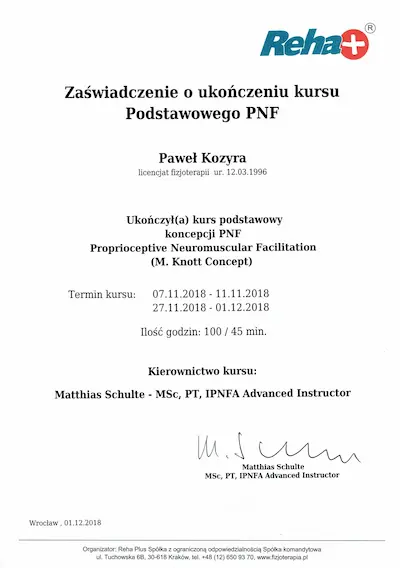
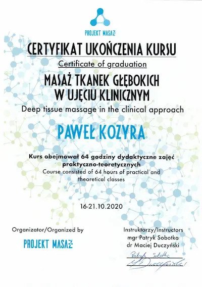
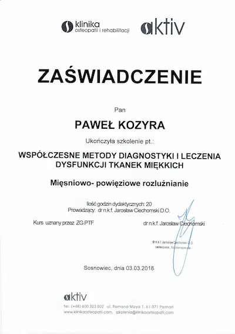
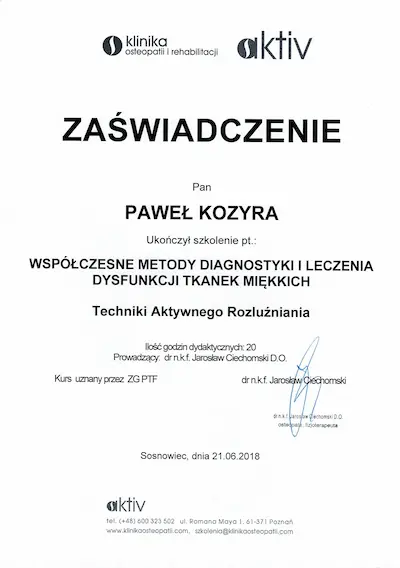
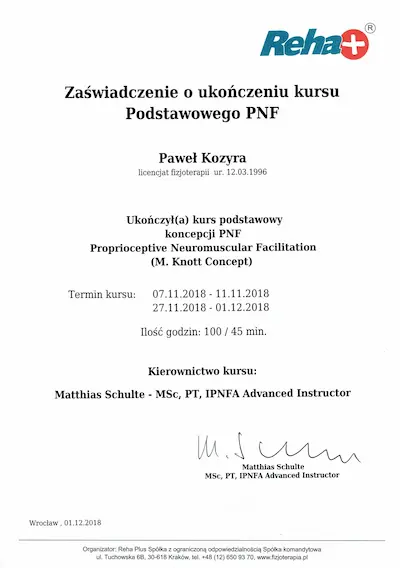
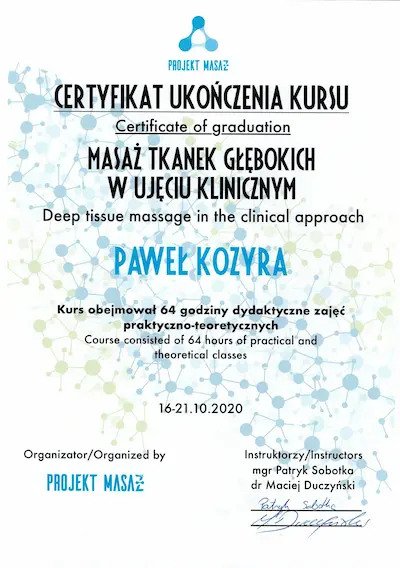
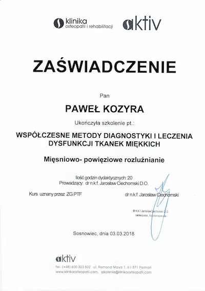
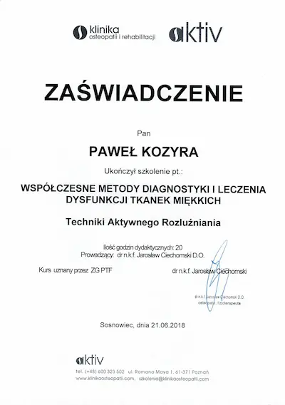
 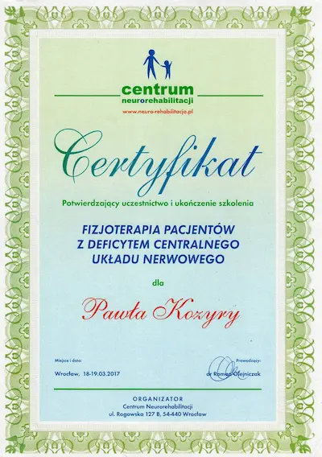
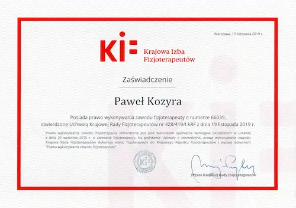
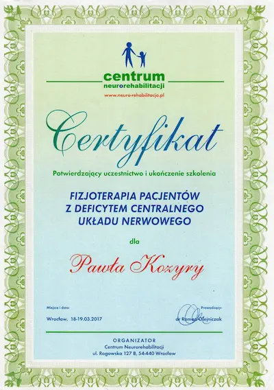
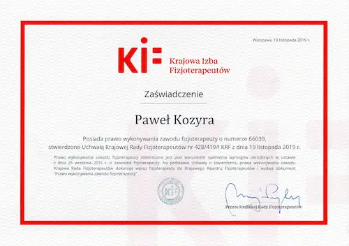
opinie
Pomogłem wielu pacjentom, przeczytaj, a potem sprawdź na sobie!
Więcej opinii znajdziesz na moim profilu na Facebooku.
cennik
kontakt
Dane kontaktowe
Dojeżdżam do domu pacjenta!
Przyjmuję w gabinecie!
Dom Studencki T-22 ul. Wróblewskiego 25, 51-657 Wrocław